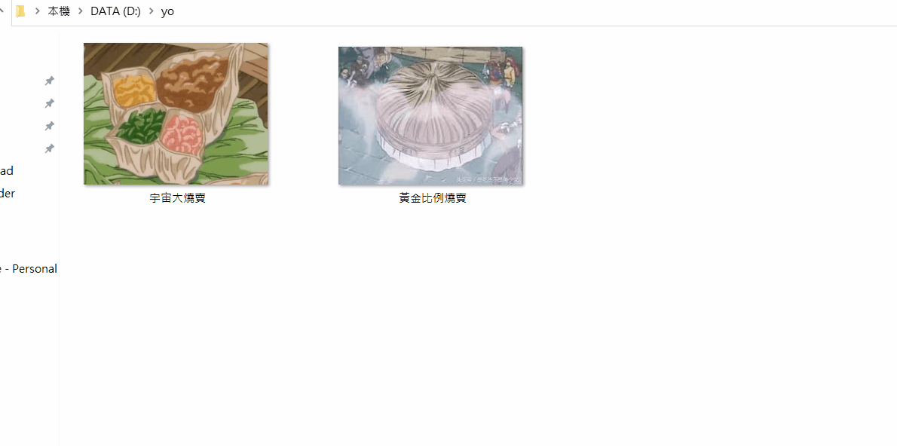

簡單的事情，不要想得太複雜。
簡述
這篇文章是我某天腦洞突然開而想出來的，目的是希望讓沒有程式基礎的人也能理解「在程式的世界裡，把兩個東西交換」代表的意思是什麼。
說故事時間
如果你沒有學過程式，那你腦袋中的「交換」應該是長這樣子：
但有學過程式的人腦中的「交換」卻是長這樣子：
WTF？工程師是吸了什麼？為什麼要用這麼反人類的方式思考？在我還不懂程式的時後我也疑惑過這個問題。
但其實我們每個人都有過這種思考模式，只是沒有發現而已。所以我接下來就來解釋到底是什麼事情？
取錯檔案名稱的慘痛
不知道你有沒有這樣的經驗，像是把兩張圖片的名字取錯，像這樣：
那你該怎麼把這兩個名字交換？我相信大部分人應該是這樣子做的：

（備註：我女友直接嗆說「我都直接改名稱欸，例如：『宇宙大燒賣-01』，只有你用這種做法吧」。好啦…如果你不是這樣子做的話，那你就當今天學到一種新的做法吧！）
把詳細步驟寫出來的話就是：
- 複製一個宇宙大燒賣，得到「宇宙大燒賣－複製」
- 把「宇宙大燒賣」刪除
- 把「黃金比例燒賣」改成「宇宙大燒賣」
- 最後把「宇宙大燒賣－複製」改成「黃金比例燒賣」
- 完成！
為什麼要先複製一份？很簡單嘛，因為「不能有同樣的檔案名稱啊」，這個道理大家都很清楚，在寫程式的時也是一樣，只是稍微換個角度來思考而已，但背後的道理都一樣。
其實理解到這邊就差不多了，接下來的部分只是讓有興趣的人學個概念，看不懂也沒關係。
首先要知道在程式的世界裡你不能幫變數改名稱，只能改變數的值。
意思是說假設我有兩個變數：
1 | let picture1 = '宇宙大燒賣.jpg' |
你絕對不可能直接把 picture1 改成 picture2，你只能透過「變數值」來修改變數：
1 | picture1 => picture2 // 錯誤的做法 |
所以要怎麼把兩個變數的值交換？很簡單嘛，直接「重新賦值」就好啦：
1 | picture1 = picture2 // 把 2 的值給 1 |
但這樣子是不對的，在你做 picture1 = picture2 的時候，picture1 的值就已經不是原本的值了，所以下一行 picture2 = picture1 的 picture1 會是重新賦值後的值，你仔細思考一下每個步驟就能理解意思了：
1 | picture1 = picture2 // picture1 的值變成 '黃金比例燒賣.jpg' |
那要怎麼做才是對的？用我們一開始說的「複製」大法：
1 | picture1_copy = picture1 // 先複製一份 '宇宙大燒賣.jpg' |
這樣子做就可以避免掉剛剛的問題，正確的讓 picture2 儲存原本 picture1 的值。而這也是為什麼工程師要多繞一圈的原因。
結尾
其實就是我腦袋突然想到的想法而已，我也不確定這種說法有沒有比較好理解一些，如果你覺得沒有很好理解的話那絕對是我文筆不好的問題，不是你的錯。
總之呢，就當作我隨便寫寫廢文，大家隨便看看就好。